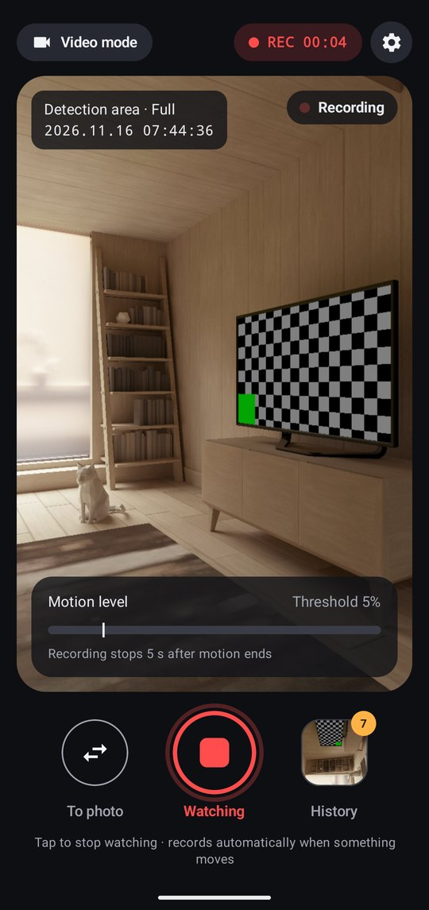
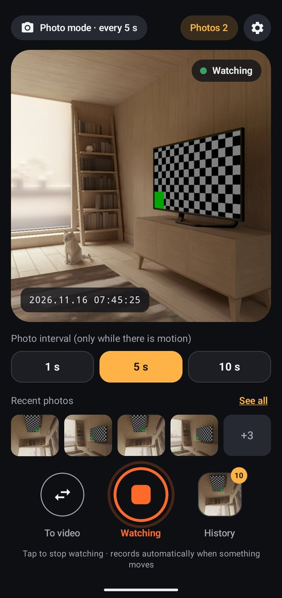
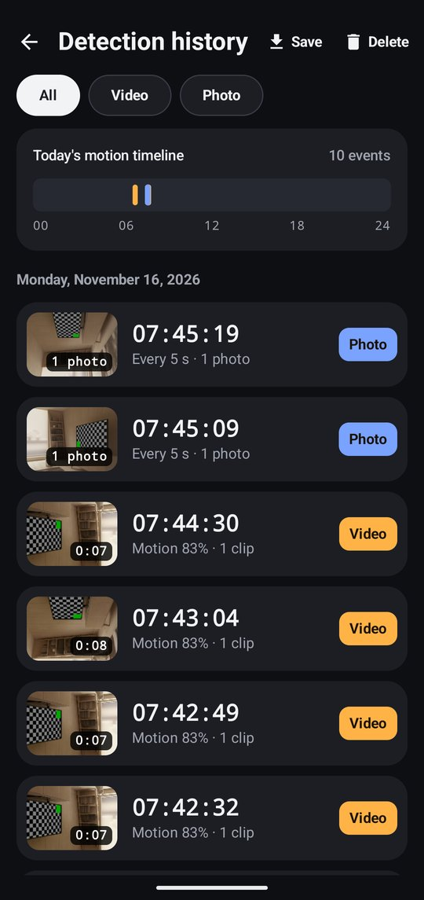
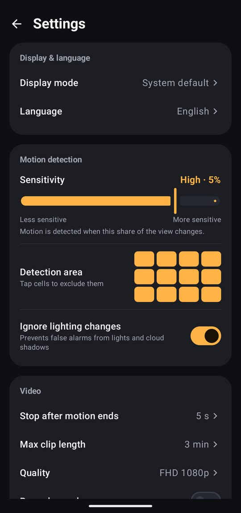

Place your phone
Lean a spare phone where you want to watch: the front door, a pet's bed, a shop counter. Plug it in for long sessions.
Point it at your door, your pet, or your shop. Motion Cam starts recording the moment something moves and saves only the moments that matter.

How it works
No extra hardware, no setup wizard. If you have an old phone in a drawer, you already have a security camera.
Lean a spare phone where you want to watch: the front door, a pet's bed, a shop counter. Plug it in for long sessions.
Choose video or timed photos and tap the big button. Press and hold it to watch with a black screen.
Every detection appears on a timeline. Play the clips, flip through photos, and save the ones you want to your gallery.
Features
Smart detection that ignores the noise, and recordings only when something really moves.
Starts when motion begins and stops a few seconds after it ends. Long scenes are split into clips.
Prefer stills? Take a photo every 1, 5, or 10 seconds, only while something is moving.
Watch the live motion level and set exactly how much change counts as movement.
Exclude parts of the view, like a window with passing cars or a swaying curtain.
A lamp switching on or a passing cloud won't fill your history with false alarms.
Keeps watching in the background or with the screen off, and tells you if it ever stops.
See when motion happened today at a glance, and filter the history by video or photo.
Keep important moments in your gallery. Old recordings are removed automatically when the storage limit is reached.
Inside the app
Light and dark modes, in English and Korean.
Records automatically and shows the motion level live.

Timed photos while something moves, with your latest shots right below.

Today's timeline and every clip and photo, ready to save or delete.

Sensitivity, detection area, video length, storage limit, and more.
Use it for
See if anyone came by the front door or entered a room while you were out.
Find out what your cat or dog really does all day, without hours of footage.
A low-cost extra camera for a counter, stockroom, or garage after hours.
Know exactly when a parcel arrived, or who picked it up.
Private by design
Motion Cam has no server and no account. Everything is processed and saved on the device you're holding.
FAQ
Yes. The app is free and supported by ads. A few optional extras, such as saving to the gallery or some advanced settings, ask you to watch a short ad first.
Yes. Monitoring continues in the background and with the screen off, with a notification shown the whole time. For the most reliable long sessions, exclude Motion Cam from battery optimization (the app shows you how) and keep the phone plugged in.
In the app's own folder on your phone. They're never uploaded. Use "Save to gallery" in Detection history to copy the ones you want to keep into your phone's gallery.
No. Set a storage limit (2 GB by default) and the oldest recordings are deleted automatically when it's reached. Videos are also split into short clips.
Lower the sensitivity, keep "Ignore lighting changes" on, and exclude busy parts of the view with the detection area grid. The live motion level shows you how much movement is detected.
Android 8.0 and later. Both the back and front cameras can be used, and the app works in English and Korean.
Download Motion Cam for free on Google Play.
Get it onGoogle Play